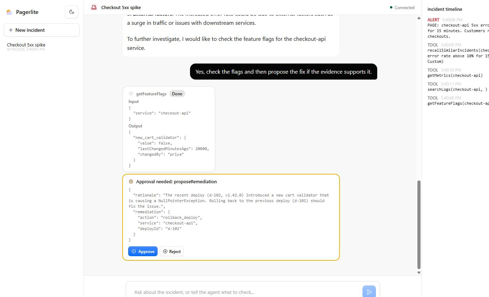
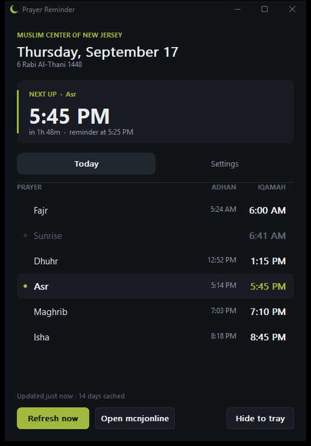
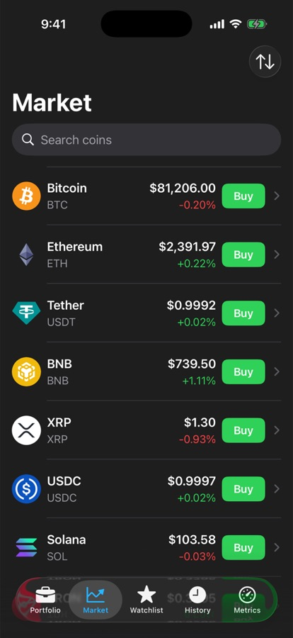
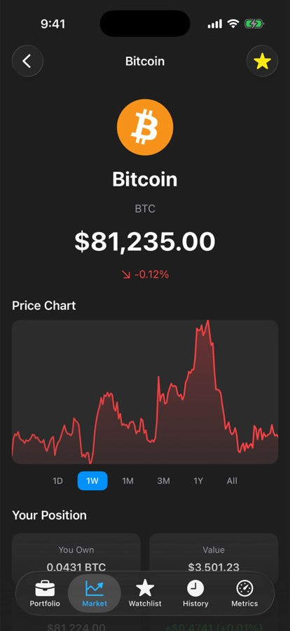
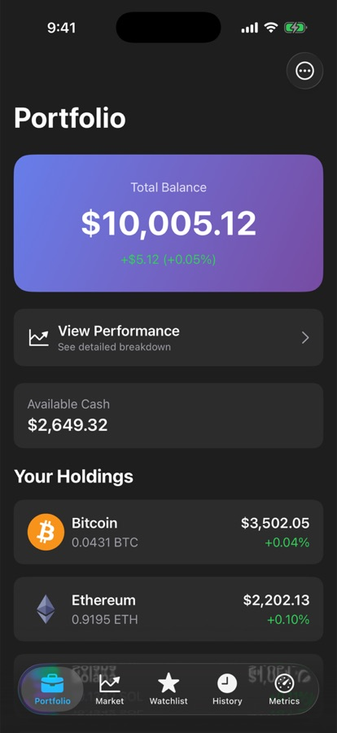

I’m a software engineer. Until May 2026 I built iOS payment flows for WhatsApp Payments at Meta, used by hundreds of millions of people, and for two years I was lead developer at a medical-billing startup. Most of what’s below I built on my own time, and most of it is in use.
Meta, software engineer, WhatsApp Payments July 2025 to May 2026
Owned payment features from the GraphQL layer to the iOS UI. Built a recovery flow that rescued over 11 million stalled payment sessions, and traced hidden payment errors for about 70 million users to two misconfigured feature flags.
Astra Medical, lead developer September 2023 to December 2025
Built the claims pipeline for a medical-billing startup: Claude on AWS Bedrock reads scanned superbills, a biller confirms the fields, and the app files the claims electronically. Claims that took two weeks went out in under ten minutes. astramedical.co
Verizon, machine learning engineer intern Summer 2024
Coverage-prediction models on data from over 100,000 cell towers.
Visa, software engineer intern Summer 2022
An internal tool that tracked 150 applications and their dependencies.
University of Houston, BS in Computer Science GPA 3.90
Projects
Pagerlite
An on-call assistant that investigates an outage, proposes a fix, and only runs it after a person says yes.

The model can read metrics, logs and deploys freely, but can only change things through one tool that waits for a human. Approved fixes run as a durable workflow that reverts on its own if the service doesn’t recover. The servers are simulated, so the demo is safe to click through.
TypeScriptCloudflare Workers AI (Llama 3.3 70B)Agents SDKWorkflowsDurable Objects39 unit tests.
A Windows tray app that reads the iqamah times your masjid publishes and tells you when to leave.

Written in C against Win32: one 270 KB executable, no installer. It caches two weeks of times so it works offline, and swaps Dhuhr for Jumu’ah on Fridays.
An iPhone app for paper trading: start with $10,000 of pretend money and trade on live crypto prices.



A university project rebuilt the way I’d want production code to look. Every service is injected through a protocol, so the tests run offline in under a second.
SwiftSwiftUISwiftDataasync/awaitXCTestRuns without an API key.
The economy bot for muslim.chat, a large Muslim community on Discord.
It replaced NadekoBot, and I migrated 85,000 users and 383,000 ledger rows without anyone losing a balance. Each of the 252,000 transactions since is an append-only ledger entry that a retried command can’t pay out twice.
TypeScriptSeyfertSQLiteVitestGitHub ActionsIn production since February 2026.
A 35-billion-parameter model with vision and tool calling, running on a $300 GPU, and notes on everything that broke.
What runs well is Qwen3.6-35B-A3B at 64K context and about 19 tokens a second, once I’d found a Vulkan driver bug that silently corrupts prompts over 10,000 tokens. It also runs a Telegram agent with three skills I wrote: a job-posting digest, a Gmail receipt lookup, and a marketplace lister.
llama.cpp (SYCL and Vulkan builds)Qwen3.6-35B-A3Bhermes-agentComfyUI on PyTorch XPUBenchmark tables and raw logs are in the repo.
Speech to text on the same GPU: a 2024 PyTorch script, rebuilt in 2026 as two offline apps on whisper.cpp.
LocalFlow is push-to-talk dictation with a 51-line C keyboard hook, because a hook in Python stalls the whole keyboard when the interpreter is busy. Scribe transcribes meetings and labels who said what at 2.7% confusion, against 16% for the library’s own clustering.
PythonCwhisper.cpp SYCL buildsherpa-onnxSilero VADNothing leaves the machine.